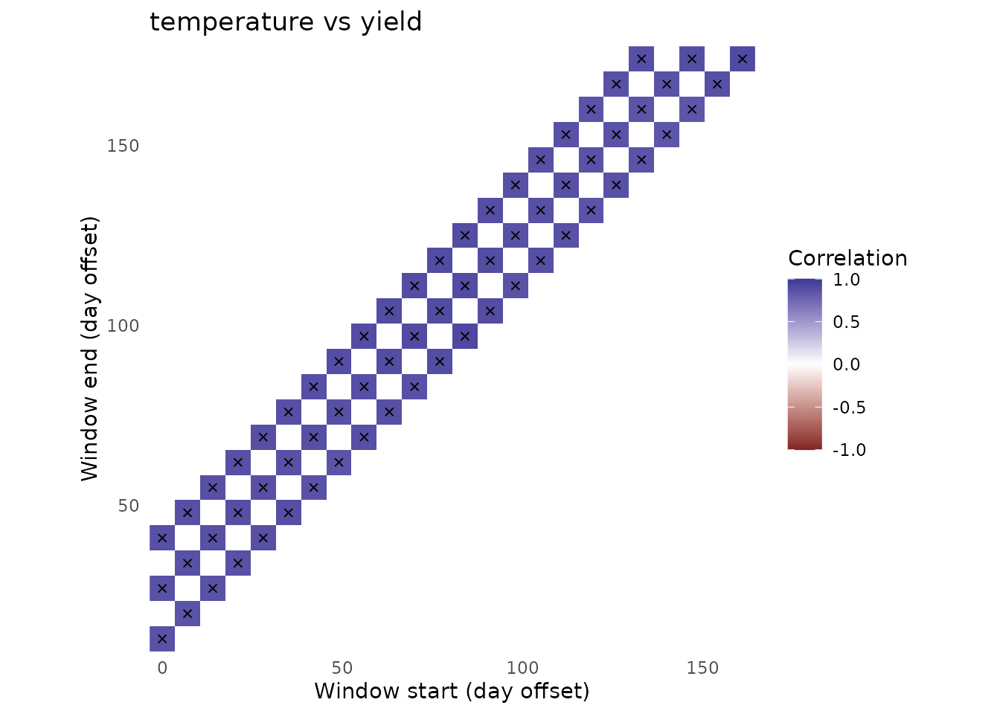

dat <- simulate_env_window_data(n_environments = 24)
fit <- scan_env_windows(
dat$weather, dat$traits, dat$periods,
weather_vars = c("temperature", "rainfall"),
trait_vars = c("yield", "quality"),
window_sizes = c(14, 28, 42), step = 7,
summaries = c(temperature = "mean", rainfall = "sum"),
min_pairs = 10
)## Analyzing window 1 of 66...## Analyzing window 25 of 66...## Analyzing window 50 of 66...## Analyzing window 66 of 66...
rank_env_windows(fit, n = 3)## # A tibble: 12 × 17
## rank window_id start_offset end_offset window_days environmental_variable
## <int> <int> <int> <int> <int> <chr>
## 1 1 42 119 146 28 rainfall
## 2 2 3 14 27 14 rainfall
## 3 3 63 112 153 42 rainfall
## 4 1 66 133 174 42 rainfall
## 5 2 24 161 174 14 rainfall
## 6 3 65 126 167 42 rainfall
## 7 1 22 147 160 14 temperature
## 8 2 16 105 118 14 temperature
## 9 3 28 21 48 28 temperature
## 10 1 13 84 97 14 temperature
## 11 2 24 161 174 14 temperature
## 12 3 35 70 97 28 temperature
## # ℹ 11 more variables: trait <chr>, mean_coverage <dbl>,
## # min_coverage_observed <dbl>, correlation <dbl>, p_value <dbl>,
## # n_pairs <int>, environmental_sd <dbl>, trait_sd <dbl>, status <chr>,
## # p_adjusted <dbl>, absolute_correlation <dbl>
plot_window_heatmap(fit, "temperature", "yield")